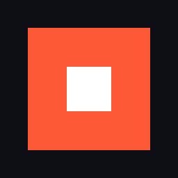

Capture runs in the background. Press F8 to save the last 15–120 seconds, then trim, reframe and export. All local: no account, no cloud.
Windows 10/11 64-bit · free · portable zip
Always-on capture of your display with a rolling 15–120 s buffer on disk. Hardware encoding (AMD, NVIDIA, Intel) with automatic fallback.
Save a clip from inside your game with a configurable hotkey. Keeps recording from the tray when the window is closed.
Desktop audio and microphone are recorded as separate tracks, so you can balance or mute them later.
Thumbnails, search, sort, favorites and tags. Clips are plain MP4 files in your Videos folder.
Trim, split and cut sections, with undo. Reframe to 16:9, 9:16 or 1:1 with zoom and pan, and add text overlays.
Frame-accurate H.264/AAC MP4 at original, 1080p or 720p, with progress and cancel.
scoop install ffmpeg. ClipForge doesn't include it.ClipForge\ClipForge.exe. The app is unsigned, so Windows may warn the first time: click More info → Run anyway.